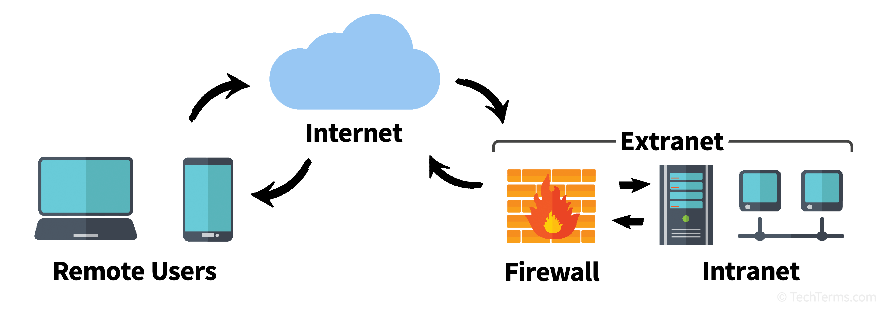

An extranet is a controlled private network that allows access to partners, vendors, suppliers, or customers - extending beyond the organization's intranet.
Difference: Intranet = employees only | Extranet = employees + approved outsiders.